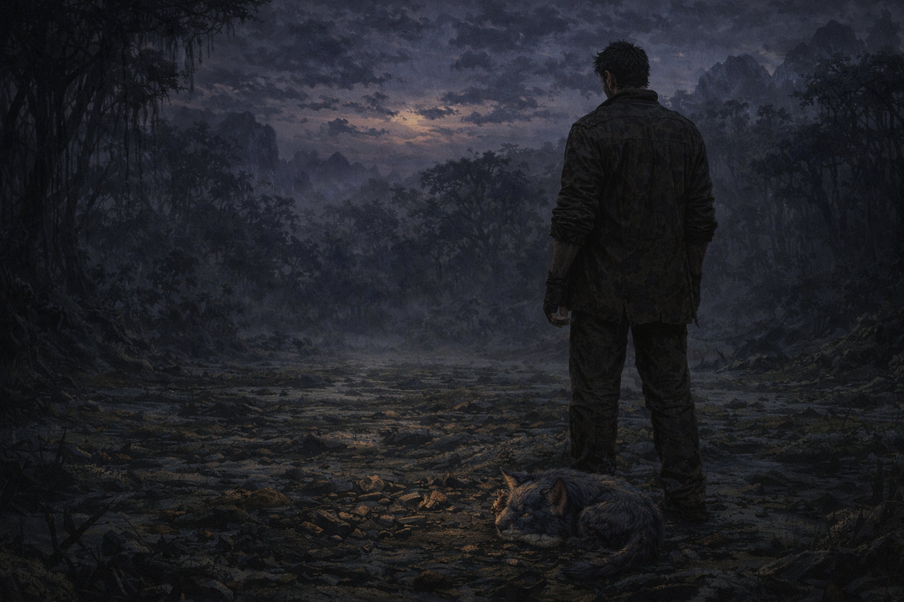

Tony se quedó sentado en ese claro por horas. KAWA dormía en su regazo mientras el planeta lúgubre comenzaba a oscurecerse lentamente. Las lágrimas se habían secado pero el peso seguía ahí, asentado en su pecho como una piedra que no tenía intención de moverse pronto. Pensó en Elvira. En cómo la había amado con una intensidad que asustaba. En cómo esa misma intensidad lo había llevado a tomar decisiones que nadie más hubiera tomado. ¿Por qué eres así, Elvira? Pero la pregunta rebotó de regreso. ¿Por qué eres así, Tony?
Se levantó lentamente. Miró la Golden Gun por última vez. La rabia, el dolor, la oscuridad, todo estaba concentrado en ese frío metal dorado. La sostuvo con fuerza y la estrelló contra una roca con toda su fuerza sobrenatural. Una vez. Dos veces. Hasta que no quedó nada reconocible. Los fragmentos se hundieron lentamente en el fango del pantano y desaparecieron para siempre. Tony sintió algo aflojarse en su pecho.
Miró a KAWA y luego miró el planeta a su alrededor. Lúgubre, hostil, verde y extraño. Pero era un lugar. Y por ahora era suficiente. No había nave, no había destino, no había Elvira. Solo él, KAWA y este planeta olvidado por todos. Decidió quedarse. Construiría algo con sus manos, usaría su inteligencia para sobrevivir, aprendería a estar solo sin que eso lo destruyera. El dolor de Elvira seguía ahí, probablemente siempre estaría. Pero ya no lo comandaba. Había perdido a Elvira. Había perdido a SITA. Había estado a punto de perderse a sí mismo. Pero seguía en pie. Y eso, por ahora, tendría que ser suficiente.
